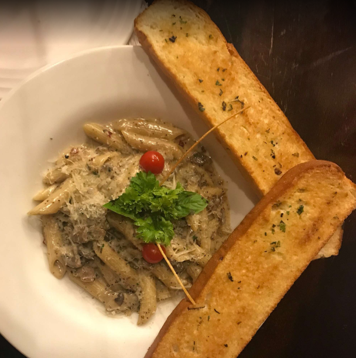
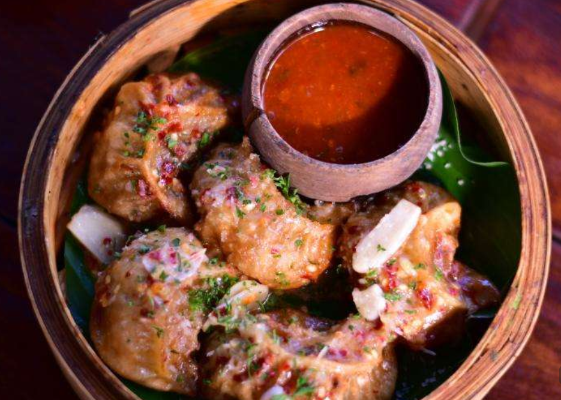

Brownie
A chocolate brownie is a square or rectangular chocolate baked confection. Brownies come in a variety of forms and may be either fudgy or cakey, depending on their density.
Learn More

Pasta
Pasta is a traditional Italian cuisine made from unleavened dough of wheat flour mixed with water or eggs, formed into sheets or shapes, and cooked by boiling or baking.
Learn More

Momos
Momos are a type of steamed dumpling popular in Nepal, Tibet, and parts of India, often filled with meat or vegetables.
Learn More